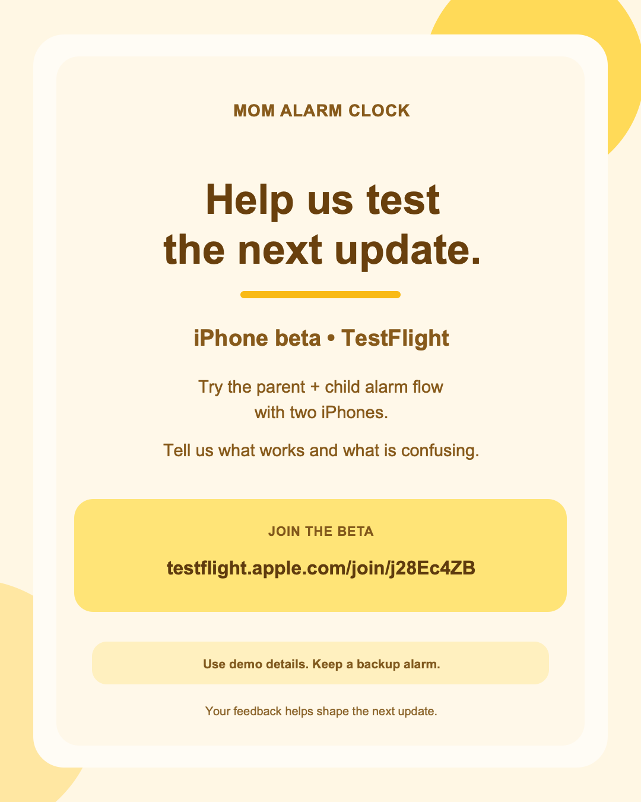

Now
What is real today
The beta invitation is live. The full feature story and every launch asset remain a review decision, because the uploaded build, public release, and release-matched screen capture still need proof.
$0spent
$500maximum proposal
4live beta posts
0approved launch videos


Live iPhone beta invitation
TestFlight is the current beta destination
Open the Mom Alarm Clock TestFlight join page
App Store Connect verification on September 28 recorded j28Ec4ZB as the MomAlarm external group: tester limit 20, observed public-link join count 0 of 20, assigned build iOS 2.0.1 (13), status Testing. This group metadata does not prove runtime feature behavior. No tester identities appear here.
Pending TestFlight action: build 13’s current “What to Test” text is “Test it out please,” which is too general for useful diagnostics. Before the next beta cycle, prepare a concrete brief covering pairing, parent-created alarms, the allowed wake-up check, recorded status, and any separately enabled reminder/calendar flow; mark each unobserved result unknown. This page does not change App Store Connect.
YouTube
TikTok
X · @momalarmclock
Profile only; no post yet. 0 followers observed.
Recorded social status, September 28. Facebook, Instagram, and YouTube beta captions are now problem-first; the Facebook post is Featured. TikTok’s edit was submitted and was still under review at last observation. X @momalarmclock is verified as ours with 0 posts and 0 followers; its bio and website point to the iPhone beta. Instagram had 0 followers; its bio includes the beta URL, but its clickable website field still points to the old root and desktop editing is mobile-only. YouTube had 0 comments; its visible TestFlight URL remains nonclickable pending one-time verification. These four post links are the live examples; X is a profile link only.
Why
Start with the prompt parents are tired of repeating.
The strategy begins with repeated room visits, calls to get up, and chore reminders—not a feature list. These are candidate launch angles for review, not replacement posts or product claims.
1
Going back into their room again
Creative evidence: a release-matched parent alarm setup and the child-side wake flow. Claim gate: show only the specific wake-up behavior build 13 and the public release demonstrate. Swipe-proof or lock-screen behavior stays a candidate until exact demonstration; the prior lock-screen Stop re-ring is not shipped.
2
The fourth “are you up?” text
Creative evidence: a real parent-and-child phone sequence and the status recorded on the parent phone. Claim gate: parent-set alarms and recorded status require matching release screens and two-device evidence. A recorded marker cannot prove a child is physically out of bed.
3
Repeating the chore reminder
Creative evidence: a real reminder from parent creation through child marking and parent view. Claim gate: reminders are a distinct candidate flow; show it only if build 13 and the public release prove it. A recorded update is not proof a chore happened.
4
The alarm was swiped; they went back to sleep
Creative evidence: real child-phone alarm and wake-check screens, including the exact swipe or lock-screen path if available. Claim gate: do not promise that an alarm returns after a swipe unless build 13 and the public release demonstrate it; the earlier lock-screen Stop re-ring is not shipped.
5
At work before they wake up
Creative evidence: a real parent-phone setup and child-phone receipt on two devices. Claim gate: the remote-set flow must work in build 13 and the public release. Voice, games, points, streaks, bedtime, reminders, and calendar each need separate proof before appearing in public copy.
Published versus draft. The four linked beta posts remain the only live examples. Any problem-led replacement is a draft for Rob’s review after release-matched evidence exists; this page does not authorize a new post or alter an existing one.
Creative
One whole-family lead, then four proof shorts
The sequence earns attention with a normal morning and earns trust with actual pixels. Each item stays a private production plan until its exact cut, screen proof, rights, destination, and caption receive approval.
1 · Golden Hour whole-family lead · 20 seconds — unrendered
Hook: One family morning, fewer repeated wake-up prompts.
Storyboard: adult morning context → real parent alarm setup → the supported child wake choice → parent sees only the recorded result. Include a reminder or calendar beat only after separate proof.
Real capture needed: release-matched Golden Hour screens and two-device flow, natural-speed adult voice, rights-cleared sound. The 17.6-second voice source is not a finished mix.
Status: plan only; no playable cut or cleared public asset.
2 · Choose their wake-up check · 23 seconds — unrendered
Hook: Which wake-up check fits your morning?
Storyboard: real parent-side choice picker → one readable supported choice → real child-side action and recorded result. Close with the iPhone beta invitation only if the shown behavior is in its uploaded build.
Real capture needed: current build 13 picker and two-device result for every choice named. Held quiz modes stay out.
Status: plan only; exact choices and release parity unproved.
3 · Get up and scan · 19 seconds — unrendered
Hook: A wake-up check away from the pillow.
Storyboard: parent chooses the supported QR wake check → physical printed wake code → real iPhone camera scan → genuine matching result. Close on a verified beta or public iOS destination.
Real capture needed: physical camera and code, matching build 13 result, and public release parity. A pairing QR or simulated scan cannot stand in.
Status: plan only; physical scan proof outstanding.
4 · Set it. See the update. · 21 seconds — unrendered
Hook: Tired of repeating the same chore reminder?
Storyboard: parent creates one reminder → child sees and marks that same reminder → parent sees its recorded update. Close with the iPhone beta invitation only if this exact flow is supported there.
Real capture needed: one coherent two-device reminder sequence in build 13 and the public release. The recorded update does not prove the chore happened.
Status: plan only; reminder flow and parity need proof.
5 · Your family’s routine · 22 seconds — unrendered
Hook: Mornings have more than one moving part.
Storyboard: real alarm time and days → supported wake choice → separately proven calendar date or reminder, each labeled for what it actually does. Close with a verified destination.
Real capture needed: release-matched screens for each distinct flow and two-device evidence where a parent update is shown.
Status: plan only; calendar and reminder claims are conditional.
Required creative boundary: genuine release-matched UI; adult-only natural VO; plain parent voice captions; physical QR proof where claimed. No AI people, children, faces, or interface; no fake tap or success screen; no step counting, lock-stop re-ring, Android promise, pricing, incentivized review, health claim, or invented outcome.
Media inventory and readiness. Only the four linked live photo posts are viewable public media now. Eight archived MP4s are not cleared for public sharing. The earlier 44-second final file was not located. Existing real simulator recordings lack build 13 and public-release parity proof. These five cards open storyboards, not playable videos; no cleared playable video exists yet.
Organic
Use the live invitation, then answer a real parent question
The existing four posts do the beta invitation job. Do not repost them just to fill a calendar.
Next: caregiver conversation
Draft held for review: “Who has to check whether your child’s school-morning alarm was set—you, another caregiver, or the child? What would you want to see on your phone?”
One product-specific question per post. Respond from the account when possible without promising a response time or asking for ratings.
Then: full feature explainer
Held until the iOS integrator supplies uploaded version/build, enabled features, and two-device results, and matched screens exist. Sample angle, only where the shipping build proves it: “Set the alarm from your phone; see the recorded update.” A Tap-Wake quiz or QR angle is conditional on matching release proof. Reminders and calendar stay conditional.
Potential post 1 · The repeated wake-up prompt — draft
Hook: How many times did you ask them to get up this morning?
Visual: parent writing down a morning routine, then the existing beta invitation card; no simulated app screens.
Sample caption: “Still going back into your child’s room to say it’s time to get up? In the Mom Alarm Clock iPhone beta, we’re testing a two-phone flow: a parent sets an alarm, the child tries a wake-up check, and the parent sees the status the app recorded. That status cannot tell you whether they got out of bed. Keep a backup alarm while testing. Join the TestFlight beta and tell us where the morning flow breaks.”
Status: draft for exact asset and platform review; beta invitation only.
Potential post 2 · Caregiver check-in — draft
Hook: Who checks that tomorrow’s alarm is set?
Visual: text question card or existing beta card, with no feature demonstration.
Sample caption: “Sending another ‘are you up?’ text after you’ve left for work? Mom Alarm Clock’s iPhone beta is testing a parent-set alarm on one phone, a wake-up check on the child’s phone, and the status the app records for the parent. It does not confirm anyone is physically awake. Keep your usual backup alarm during the test. Join through TestFlight and tell us whether that two-phone check-in helps your morning.”
Status: draft for moderation and exact platform review; no outcome claim.
Potential post 3 · Repeating the chore reminder — proof gated
Hook: The third reminder about the same chore.
Visual: one real parent-created reminder, child mark, and parent-recorded update on two devices.
Proof gate: demonstrate that exact reminder flow in uploaded build 13 and the public release; match screenshots and destination. Describe a recorded update only, never completion of the chore.
Status: not publish-ready; no exact public caption until proof clears.
Potential post 4 · Choosing a wake-up check — proof gated
Hook: What kind of wake-up check fits your family?
Visual: genuine current picker and supported child action, captured from the actual build.
Proof gate: confirm each named choice and result on build 13 and the public release, then write platform-specific copy against those exact screens. Do not imply a check proves a child is out of bed.
Status: not publish-ready; exact feature claim pending.
Potential post 5 · Setting an alarm before you leave — proof gated
Hook: Already at work before they wake?
Visual: a real parent-phone setup and child-phone receipt for one alarm, with both devices visible.
Proof gate: verify remote creation, delivery, recorded status, and public parity for the exact flow. Separate what the phone recorded from whether the child woke up.
Status: not publish-ready; two-device proof outstanding.
Exact next-post gate. The full feature post is not an approved draft for publication. It needs shipping-build proof, public destination and parity, real screens, an exact caption stripped of conditional text, and Rob’s approval of the finished platform piece.
Prelaunch: prove and review
Confirm release-matched screens, destination, captions, comment handling, campaign links, reporting access, and approval. The X account is verified as @momalarmclock; its first post still needs a real-screen asset and Rob’s review. Rob approves every public piece and every material creative change.
Day 0: verify public iOS
Confirm the public App Store version, destination, and feature parity before publishing launch work or starting Apple Ads. Record the exact version/build evidence and what remains unverified.
Days 1–8: capped tests
Run only the approved Apple cap and, if separately cleared, the $100 Meta test. Check delivery, spend, store path, comments, and feedback daily; do not add platforms or raise caps.
Weekly: decide and iterate
Publish a short report, triage issues, compare one approved experiment at a time, and bring any material spend, targeting, creative, or public-message change to Rob.
Channel-specific management
Apple Ads: search terms, bids, spend, taps, and Apple-reported downloads. Meta: placement delivery, spend, impressions, and clicks. Facebook, Instagram, TikTok, and YouTube: manually check comments, inboxes, saves/shares, and recurring questions. The verified X profile is a fifth organic channel to prepare: keep its bio and destination consistent, use release-matched screenshots, short caregiver questions or answers, and manual replies.
Facebook first among social channels
Pew’s 2025 U.S. adult survey reports Facebook use at 71% and X at 21%. That supports Facebook as the first social-community priority and Meta as the first social-ad candidate. Apple Ads remains the first proposed paid acquisition test. X deserves an approved organic presence, not equal initial spend; population reach is not evidence of Mom Alarm conversion.
X link measurement
Use an X-specific tracked link only after the exact post is approved. It can show visits or link clicks; it does not establish downloads, activation, or revenue. Keep those fields unknown unless the distinct Apple campaign-link or product evidence supports them.
Problem-first message angles
Lead with the repeated morning wake-up prompt or repeated chore reminder, then show only the release-proven action and recorded update. Do not turn swipe-proof, voice, points, streaks, games, bedtime, notifications, quiz/QR, reminders, or calendar into a public claim until build 13 and the public release demonstrate the exact behavior.
Paid
A $500 ceiling, with $100 deliberately allowed to remain unspent
This is a proposal for later authorization, not a campaign. No company or placement is guaranteed to accept, serve, or deliver an ad.
$500 maximum
$400 is proposed for Apple Ads Search Results over eight calendar days. The remaining $100 is conditional and stays at $0 unless its separate gate clears.
| Proposed item | Calculation | Maximum |
|---|---|---|
| Apple Ads Search Results US iOS, after public V2 and account review | 8 × ($35 Category + $5 Brand + $10 Discovery) = $400 | $400 |
| Conditional Meta reach/click test Traffic/reach only, never assumed to be an install campaign | Only after a real asset, selected placement preview, working destination, distinct Apple campaign link, privacy review, and separate approval | $100 or $0 |
| TikTok / Google / YouTube / X paid | Phase 2; X requires its own small cap, approved creative, and credible attributable measurement; neither visits nor clicks promise installs | $0 |
Apple may exceed a daily budget on individual days, but its official end-date rule caps each campaign at the number of campaign days × its daily budget. The $400 maximum is 8 × (35 + 5 + 10), only if the account timezone and exactly eight calendar days are verified in the actual setup; it does not promise inventory or delivery. If Meta total-budget control, creative/link proof, or another Meta gate fails, the $100 is unspent.
Apple Search Results ads rely on approved App Store product-page or custom-product-page assets, not uploaded social MP4s. Build and test a truthful product page before activation.
Illustrative scenario calculator — assumptions, never a prediction
These defaults make the arithmetic visible. They are not a forecast, target, benchmark, delivery guarantee, unique-viewer count, or basis to spend. Replace them with real Apple account planning before any launch decision.
133 taps · 40 downloadsApple calculation: spend ÷ CPT; taps × new-download rate
4,444 impressionsApple calculation: taps ÷ TTR; impressions are not unique viewers
6,667 impressions · 67 clicksMeta calculation: spend ÷ CPM × 1,000; impressions × CTR
Measurement before interpretation
Use Apple Ads reporting for its platform new downloads and redownloads. For the conditional Meta test, report Meta clicks separately. Generate and validate a distinct Apple campaign link; only report link-attributed first-time downloads if its actual report works and the privacy threshold is met. If it is unavailable, downloads remain unknown.
Context, not an ad forecast
App Store Connect showed 229 first-time downloads and 12.4K impressions over Jun 29–Sep 26. Those are V1-era listing context only, not a V2 forecast or proof that paid ads will work.
| Date | Channel / campaign | Approved cap | Actual spend | Impressions | Taps / clicks | App Store first-time downloads | Activation if observable | Trial starts | Paid conversions | Revenue | Refunds | Source / freshness |
|---|---|---|---|---|---|---|---|---|---|---|---|---|
| Enter reporting date | Apple Ads / campaign link / Meta | Approved amount | Actual reported amount | Platform report | Platform report | Apple Ads or link report; otherwise unknown | Aggregate product evidence or unknown | Unknown until measured | Unknown until measured | Attributable amount or unknown | Reported amount or unknown | Report name, pull time, attribution window |
Ledger math. Cost per reported first-time download = actual spend ÷ reported first-time downloads, only when that field is nonzero and attributable to the named source. Cost per paid customer = actual spend ÷ attributable paid conversions. Payback and ROAS require attributable revenue actually measured against the same spend; otherwise each remains unknown. Apple Ads attribution, App Store campaign-link attribution, Meta clicks, organic engagement, and product activation are separate signals and must not be combined as though they prove one another.
Learn
A weekly loop that listens before it scales
The campaign should produce a short decision report, not a pile of platform numbers.
Each week
- Collect App Store Connect, Apple Ads, manually checked native comments/inboxes, and momalarmclock@gmail.com feedback. The address is not verified as an automatic alert for every social comment; continue manual checks until a controlled alert-and-inbox test succeeds for each platform.
- Log the ledger with source and freshness. Separate platform delivery, App Store clicks, reported new downloads, campaign-link observations, setup/activation evidence, and complaints.
- Triage store-path, setup, reliability, privacy, and misleading-claim issues first; record owner, severity, evidence, and resolution before repeating related creative. Do not solicit or reward ratings or stars.
Provisional decision rules
- Pause or fix if the public store path breaks, delivery is wrong, feedback identifies a misleading claim, a reliability/setup issue appears, or reported acquisition cost worsens for two comparable checks without a credible explanation.
- Continue the cap only while the ledger is complete enough to interpret and no material issue is open. Test one documented variable at a time: search theme, creative, placement, or landing route.
- Consider a change only after Rob reviews a weekly report showing comparable spend, reported first-time downloads, and aggregate activation/return evidence where observable. These are provisional learning criteria, not performance promises or automatic scale rules.
Before a new organic postRob approves its exact asset and caption; feature claims have matching uploaded-build proof and current screens.
Before a videoRob approves the exact cut after rights, release parity, captions, final audio, screen proof, destination, and platform presentation review.
Before Apple AdsPublic US V2 listing and feature parity are verified; Apple account, terms, audience/territory, search terms, bids, daily budgets, product page, reporting fields, and the exact $400 authorization are reviewed.
Before Meta’s $100 testRob separately approves a genuine asset, exact placement preview/copy, working destination, distinct Apple campaign link, privacy-compatible measurement, and a confirmed total-budget control for the capped traffic/reach interpretation. Otherwise it remains unspent.
Before any increaseRob reviews the weekly report and verified acquisition/activation evidence; no automatic budget increase.